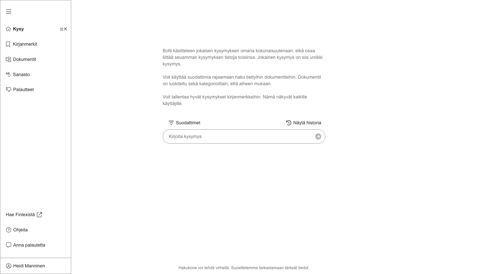
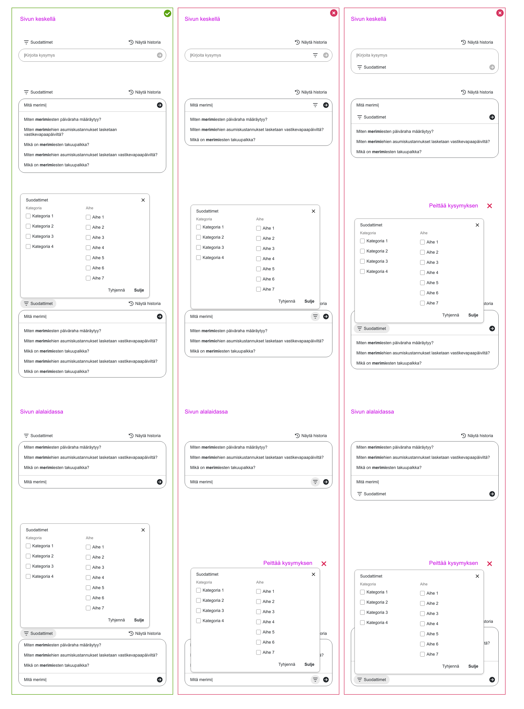
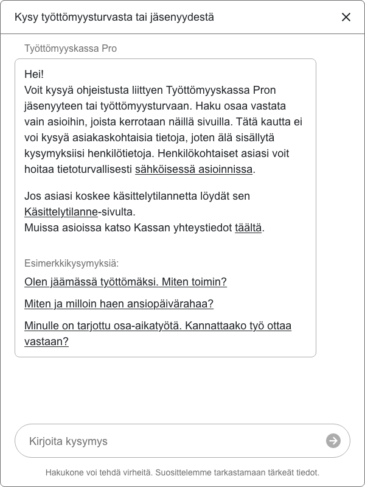
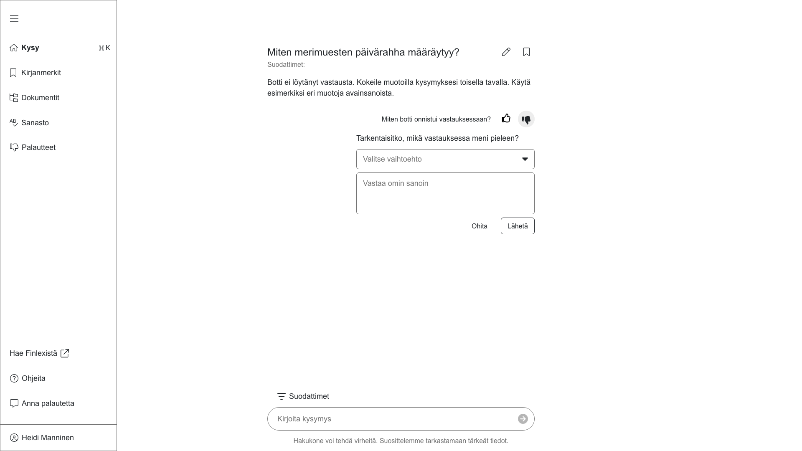

Setting Expectations
#B2B
#B2C
#ProUnemploymentFund
We created two AI bots for unemployment fund. One for workers that handle the customers forms and one for their public web page to help visitors to find correct information for their need. These bots will transform how unemployment fund workers and customers navigate complex laws and benefits. It streamlines support, providing quick and hopefully accurate answers to ensure a smoother experience for everyone.
Product: Pro unemployment fund public chatbot
Team
Designer
Data Scientist / Developer
Project Manager
My contribution
Research
User interviews
User flows
Wireframes
UI + Visual design
Style guide
Accessibility
Prototype
Research
To create an effective AI chatbot, I conducted research into best practices by exploring articles and analyzing designs from ChatGPT, Perplexity, and other leading AI chatbots. This process helped identify essential principles to guide the project.
The best practices include setting clear expectations about the bot’s capabilities, ensuring users understand they are not chatting with a human, and providing guidance on the types of prompts to use and the bot's limitations with data sources. Interaction should be flexible, offering both free-text input and clickable links, while sorting and filtering options can help users refine results. Dynamic feedback is vital, and chatbots should be tailored to specific use cases. Transparency and effective error management enhance trust, ensuring users have ways to recover or rephrase questions when the bot doesn’t perform as expected.
When users think they are interacting with a basic bot, they often use keyword-based prompts. However, when the bot is perceived as human-like, they pose more complex queries. This is the key finding to define UI user experience; how to manage users expectations.
Wireframes and prototypes
Creating an effective AI chatbot required a deep dive into best practices to ensure it met user needs and aligned with its technical limitations. One critical insight from the research was the importance of setting correct user expectations. A chatbot isn’t a human, and users must understand its capabilities, limitations, and data sources the bot has available. These bots do not search the web, but restricted documents for answers. This is why I need to provide guidance on what kind of prompts to use. Clear expectations not only enhance the user experience but also build trust by preventing confusion or disappointment.
For the internal version, the main tool in the UI is the prompt area. I decided to place the text input and filters to the center of the space. It’s a good and clear place to start the work. To set the expectations of the user, I provided clear instructions of how to use the bot.

The text input itself needed a lot of consideration. Users would benefit from filters, but where to place them? I tested 3 different options in all the different use cases to see how the elements work with each other.

For the public-facing bot, which replaced a simpler chatbot on customer websites, I opted for a design resembling a chatbot but avoided overly conversational tone to manage user expectations. I also crafted example prompts for users. Even if we have predictive search that offers previously asked questions to the user, it’s more efficient to know what style to use from the start.

Given the financial nature of the advice the bot provides, it was essential to emphasize why and how users should verify the accuracy of the answers. This ensures that users approach the information critically, reducing the risk of over-reliance on the chatbot's outputs. If the bots would answer badly or couldn’t answers at all, I needed to ensure there’s proper fallback handling and feedback options.
With the internal version we would need to know what actually is wrong with the answer, so I added text based answer options. That way users can instruct us clearly and we can and develop the bot further. With the public version the thumbs up or down is enough. We can’t expect that random people know what parts of the answer were definetely wrong, so the answers are not so reliable. For them it’s much more important to offer options how to improve the answer or provide instruction to find out other ways to continue their search.

Outcomes and lessons learned
Through the design process, I gained valuable insights into designing effective AI chatbot interfaces. One key takeaway was understanding how the prompt field should function when integrating predictive search and filtering options. This combination not only improves usability but also aligns user input with the bot’s technical capabilities, ensuring more relevant results.
Additionally, I learned the importance of nuanced copywriting in shaping user expectations. Small adjustments in the language used within the interface can significantly influence how users perceive and interact with the bot, ultimately impacting their overall experience. These lessons will inform future iterations of the design and contribute to creating a more intuitive and user-friendly chatbot.